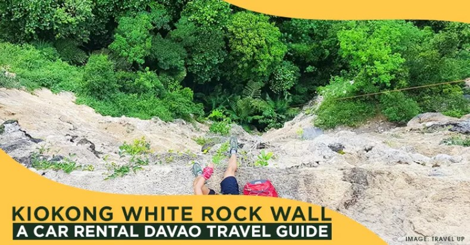
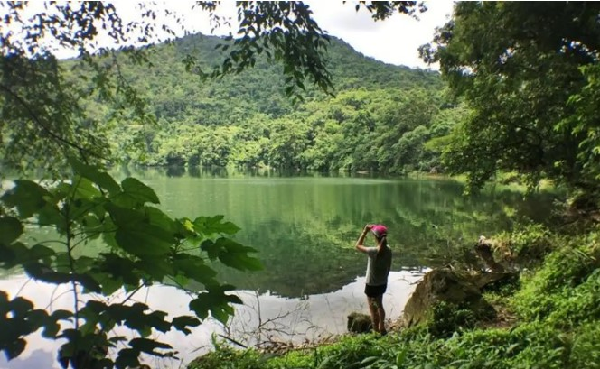
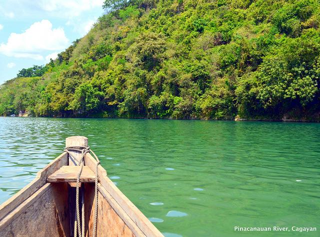

Recommended Rare Spots to Visit in the Philippines
You might have heard about the Philippines. Its beaches, volcanoes, terraces, and more are featured in many lists worldwide. While those are the most popular place to visit, don't you want something new? Explore a new land, vernture into a new location, and try a new activity that many do not know yet. That is why we are bringing this list to show you our recommeended top rare spots to visit while in the Philippines.

KIOKONG WHITE ROCK WALL
Situated in San Jose, Quezon, Bukidnon, Mindanao.
Has at least one hundred routes suitable for climbers of all skill levels.

BULUSAN VOLCANO NATURAL PARK
Bulusan Volcano Natural Park is filled with several bodies of water.
Taking a boat trip is the ideal way to explore and take in the beauty of the park.
Additionally, guests may hike to Mount Bulusan from the lake.
The breathtaking vista that envelops the lake is a protected rainforest teeming with indigenous plants and animals.
Here are found endangered bird species such as the Philippine Warty Pig, South Luzon Cloud Rat, Spotted Wood Kingfisher, and Luzon Hornbill.

PINACANAUAN RIVER
One of the biggest tributaries of the Cagayan River, which is the longest, broadest, and strongest river in the Philippines, is the Pinacanauan River.
It is located in the municipality of Peñablanca in the Cagayan Valley, southeast of the province of Cagayan.
It is one of the province of Cagayan's tourism attractions because of its crystal-clear waters and lovely natural surroundings.
The Pinacanauan River is a well-liked location for swimming, boating, and whitewater rafting due to its class I and II rapids.